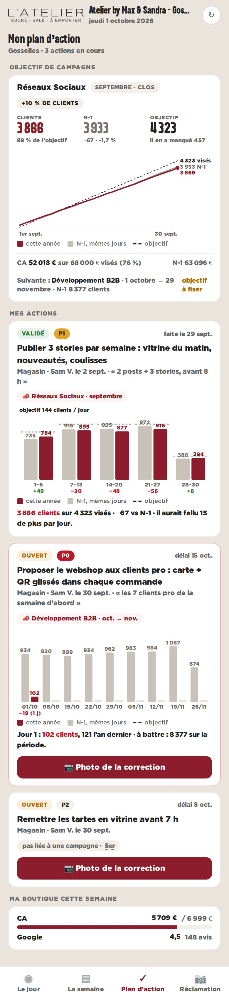
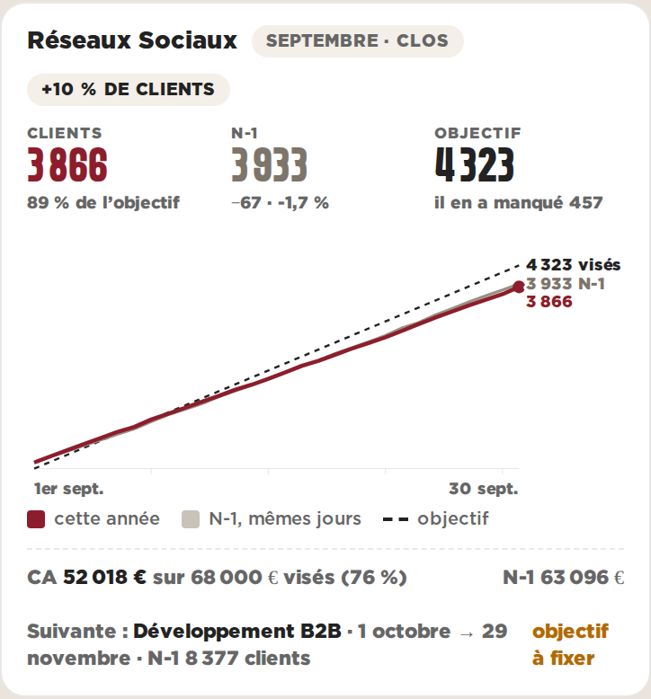
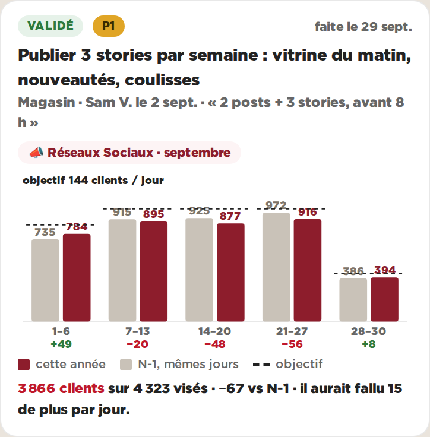

Plan d’action · objectifs de campagne · Gosselies · données réelles du 01/10/2026, actions en illustrationE — Simple : quatre sections, chaque graphique une fois
Le plan d’action en quatre sections : le titre, l’objectif de campagne, mes actions, ma boutique. La trajectoire (B) est dans la carte de campagne — c’est la campagne qu’elle raconte — ; les semaines (A) sont sur l’action, avec une seule ligne de conclusion. La campagne suivante tient en une ligne.

Le plan d’action au téléphone (390 px)

La campagne de septembre

L’action liée à la campagne
Pour
- Un seul graphique par carte, chacun à sa place : la trajectoire dit la campagne, les semaines disent l’action
- Trois chiffres en tête (clients, N-1, objectif), lisibles sans défiler
- Une action = un demi-écran au téléphone
Contre
- La campagne d’octobre n’a qu’une ligne : son N-1 jour par jour n’est pas montré
- À coder : le lien action ↔ campagne (campagne_id) et le « + x % » de la campagne d’octobre